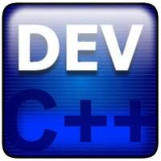
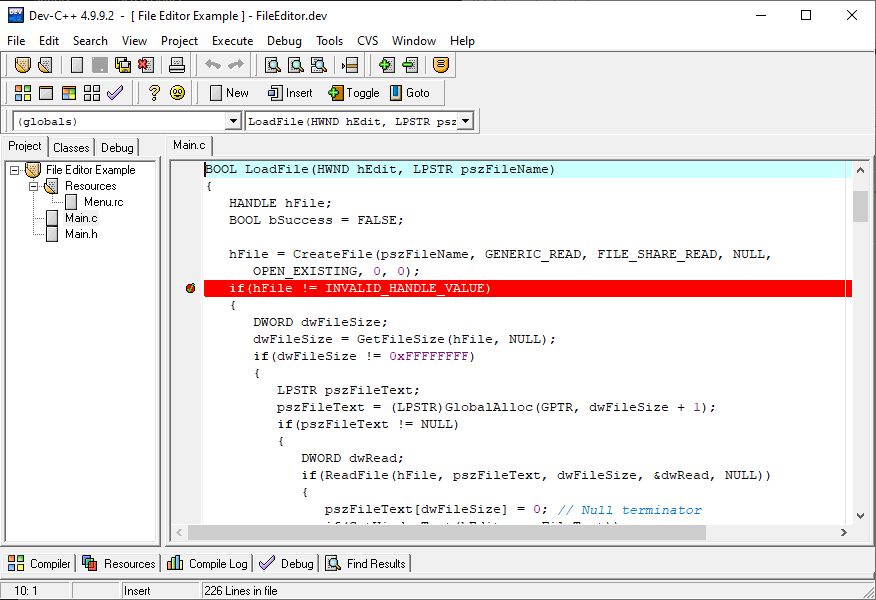

1998 – Bloodshed DEV-C++ Released
Created by Colin Laplace under Bloodshed Software. One of the first free C++ IDEs for Windows, bundled with MinGW compiler.
2005 – Development Stalls
Official updates stopped. Despite this, schools and beginners kept using it widely.
2011 – Orwell's DEV-C++
Johan Mes (Orwell) revived the project, updating compilers, fixing bugs, and modernizing features.

2015 – 2019 – Popular with Students
Orwell’s version became the default IDE for many schools and universities.

2020 – Embarcadero Acquisition
DEV-C++ officially acquired, rebranded, and improved with Windows 10 support and modern compilers.

Today – Still Lightweight
DEV-C++ remains a lightweight choice for learners, even as modern IDEs like Visual Studio and CLion dominate.

Editor Placeholder
// Future DEV-C++ web editor will appear here...